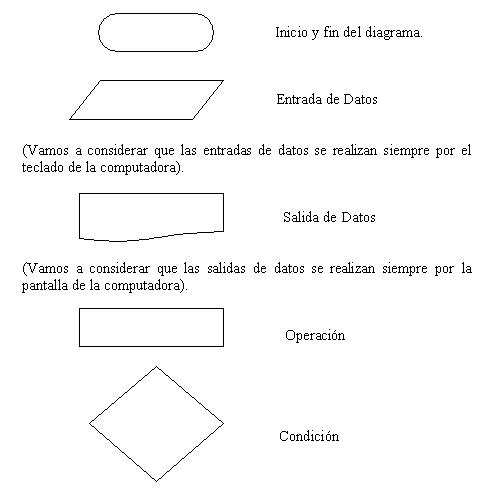

El curso está ideado para ser desarrollado por una persona que no conoce nada de programación y se utilice C++ como primer lenguaje.
El objetivo fundamental de este tutorial es permitir que el estudiante pueda resolver problemas de distinta índole (matemáticos, administrativos, gráficos, contables etc.) empleando como herramienta la computadora.
Hay que tener en cuenta que para llegar a ser programador se debe recorrer un largo camino donde cada tema es fundamental para conceptos futuros. Es importante no dejar temas sin entender y relacionar.
La programación a diferencia de otras materias como podría ser la historia requiere un estudio metódico y ordenado (en historia se puede estudiar la edad media sin tener grandes conocimientos de la edad antigua)
La programación es una actividad nueva para el estudiante, todavía no hay en muchos colegios una materia parecida.
Es bueno tenerse paciencia cuando los problemas no se resuelven por completo, pero es de fundamental importancia dedicar tiempo al análisis individual de los problemas.
¿Qué es un programa?
Programa: Conjunto de instrucciones que entiende una computadora para realizar una actividad.
Todo programa tiene un objetivo bien definido: un procesador de texto es un programa que permite cargar, modificar e imprimir textos, un programa de ajedrez permite jugar al ajedrez contra el ordenador u otro contrincante humano.
La actividad fundamental del programador es resolver problemas empleando el ordenador como herramienta fundamental.
Para la resolución de un problema hay que plantear un algoritmo.
Algoritmo: Son los pasos a seguir para resolver un problema.
Diagrama de flujo
Un diagrama de flujo es la representación gráfica de un ALGORITMO.
Los símbolos gráficos a utilizar para el planteo de diagramas de flujo son:

Estos son los elementos esenciales que intervienen en el desarrollo de un diagrama de flujo.
Planteo de un problema utilizando diagramas de flujo.
Para plantear un diagrama de flujo debemos tener muy en claro el problema a resolver.
Ejemplo : Calcular el sueldo mensual de un operario conociendo la cantidad de horas trabajadas y el pago por hora.
Podemos identificar:
Datos conocidos:
Horas trabajadas en el mes.
Pago por hora.
Proceso:
Cálculo del sueldo multiplicando la cantidad de horas por el pago por hora.
Información resultante:
Sueldo mensual.
Si hacemos un análisis todo problema está constituido por:
- Datos conocidos: Datos con los que se cuenta al plantear el problema.
- Proceso: Operaciones a realizar con los datos conocidos.
- Información resultante: Es la información que resuelve el problema.
Esta forma de expresar un problema identificando sus datos conocidos, procesos e información resultante puede llegar a ser engorrosa para problemas complejos donde hay muchos datos conocidos y procesos. Es por eso que resulta mucho más efectivo representar los pasos para la resolución del problema mediante un diagrama de flujo.

Resulta mucho más fácil entender un gráfico que un texto.
El diagrama de flujo nos identifica claramente los datos de entrada, operaciones y datos de salida.
En el ejemplo tenemos dos datos de entrada: horasTrabajadas y costoHora, a las entradas las representamos con un paralelogramo y hacemos un paralelogramo por cada dato de entrada.
La operación se representa con un rectángulo, debemos hacer un rectángulo por cada operación.
A la salida la representamos con la hoja rota.
El diagrama de flujo nos da una idea del orden de ejecución de las actividades en el tiempo. Primero cargamos los datos de entrada, luego hacemos las operaciones necesarias y por último mostramos los resultados.